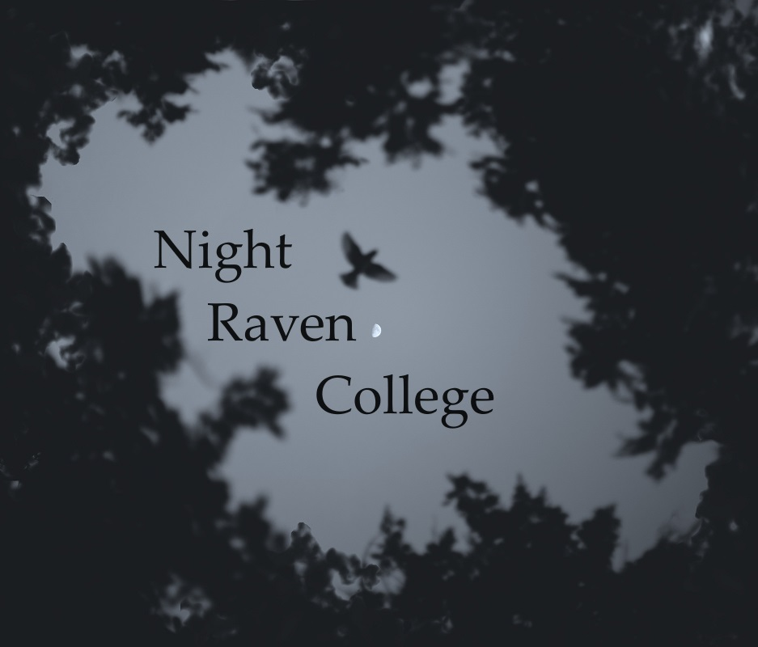

"
Night Raven College
, located in its sprawling enchanting campus on the South end of Sage Isle since its historic founding more than 400 years ago, accepts only the most promising mages, and promises only the most elite arcane academics education."
More information:
Navigation Menu
Classes and Clubs
Dorms
About NRC and Mailing